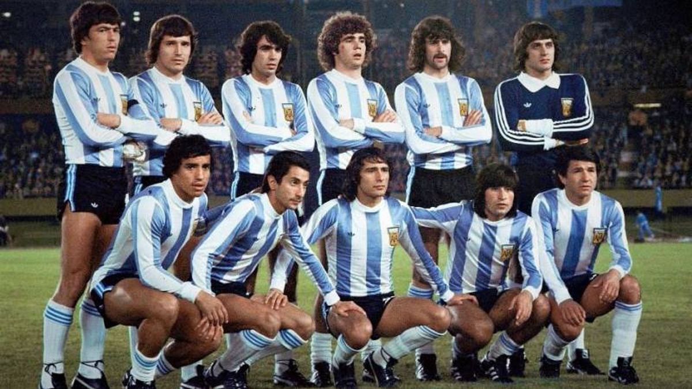
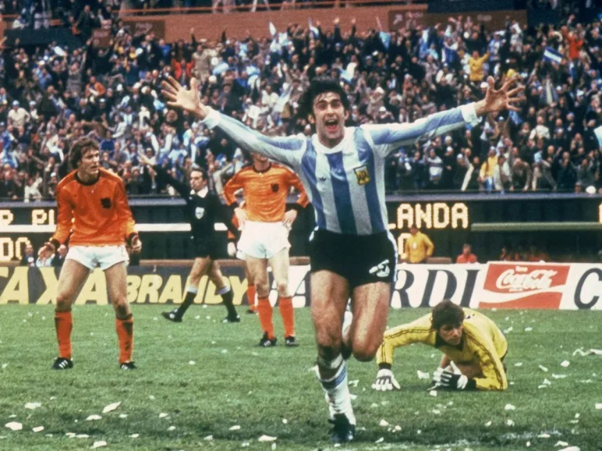
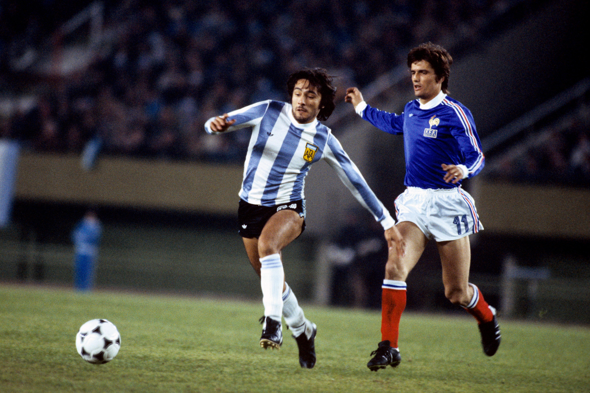
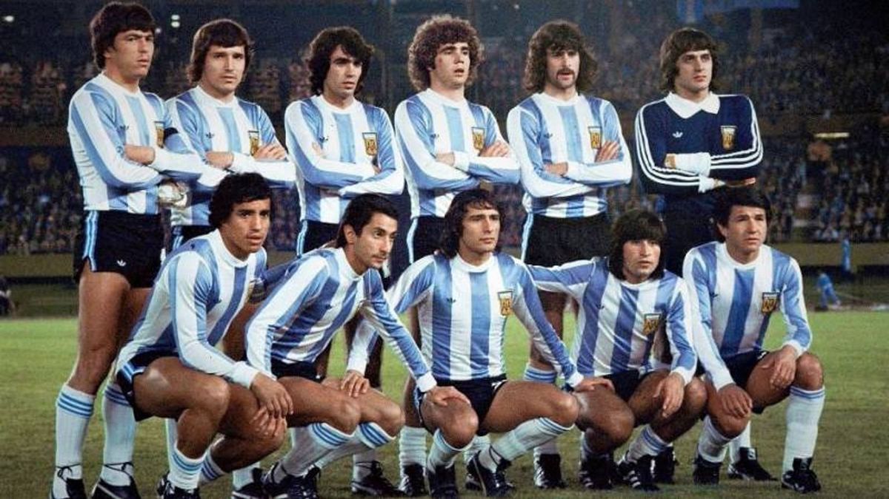
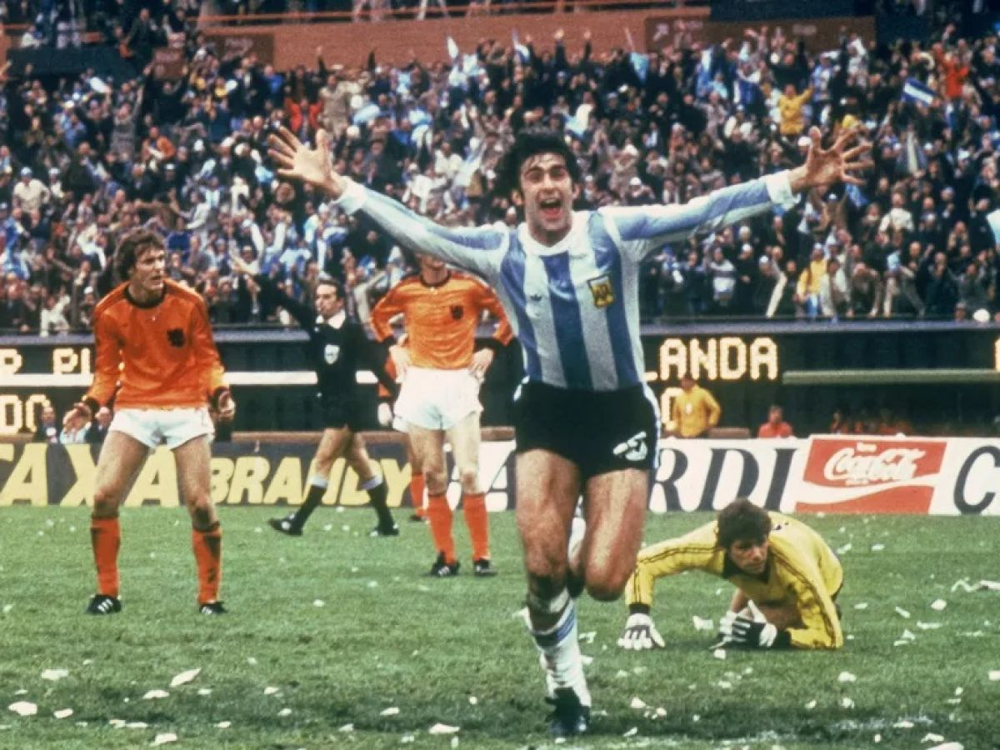
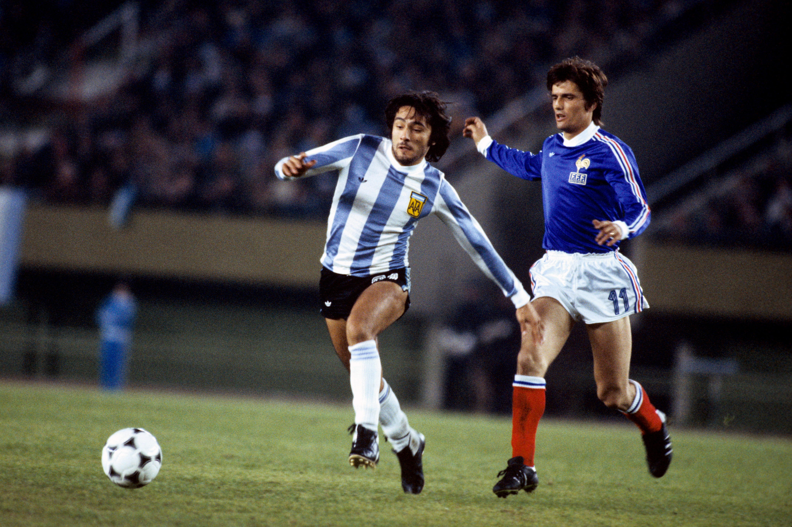
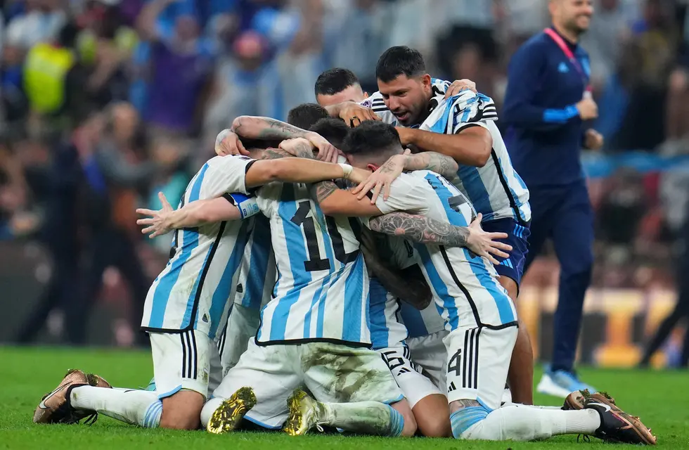
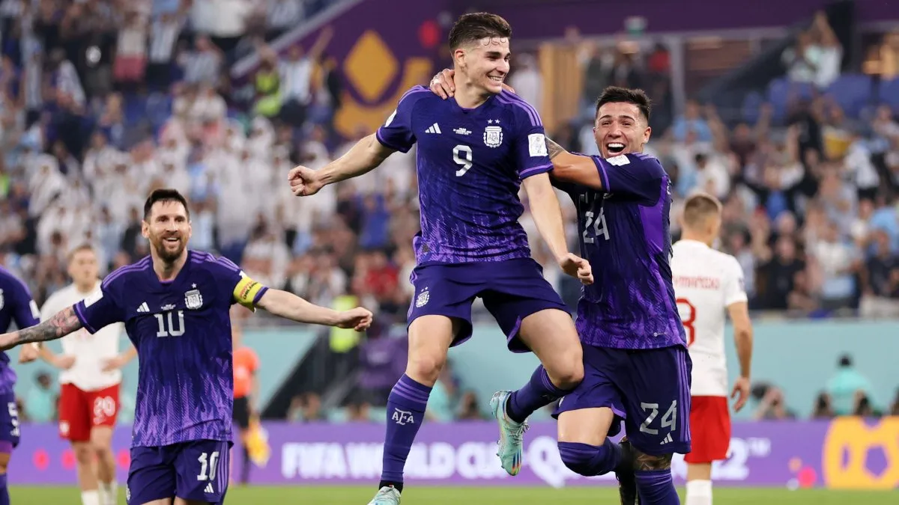
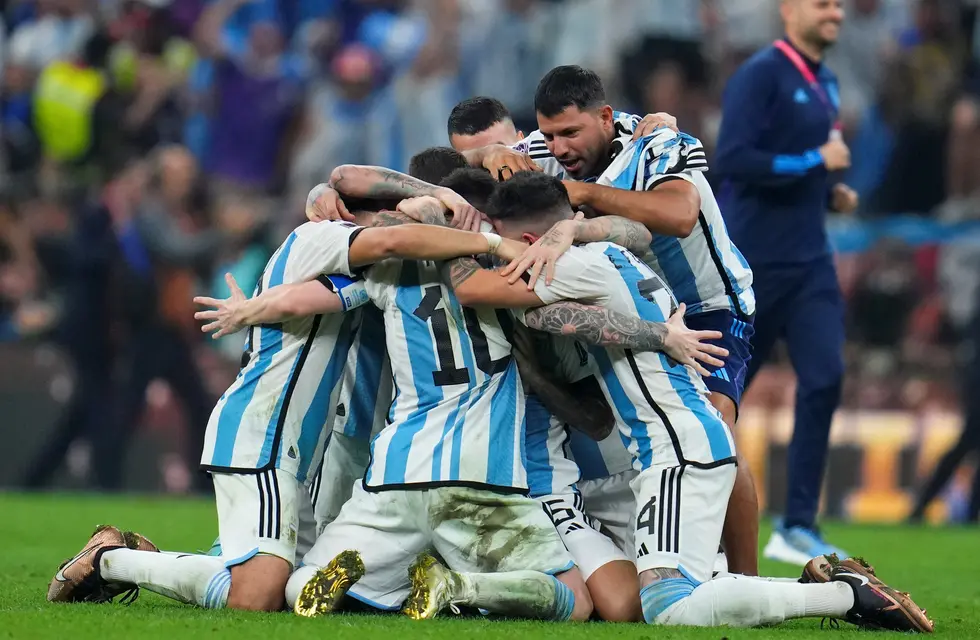
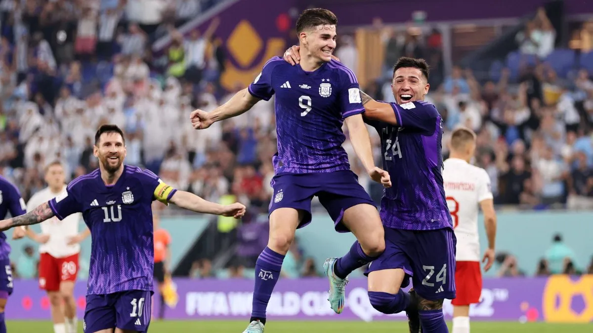

Argentina
Argentina 1978
Argentina, que perdió la final de la primera edición de la Copa Mundial de la FIFA™, alcanzó la gloria ante su público 48 años después, propulsada por los goles de Mario Kempes, ganador de la Bota de Oro, y el fervor de su vehemente hinchada, cuya lluvia de papelitos azules y blancos que se arremolinaban en los estadios de Buenos Aires y Rosario dejó imágenes para el recuerdo.
Historia 





 


